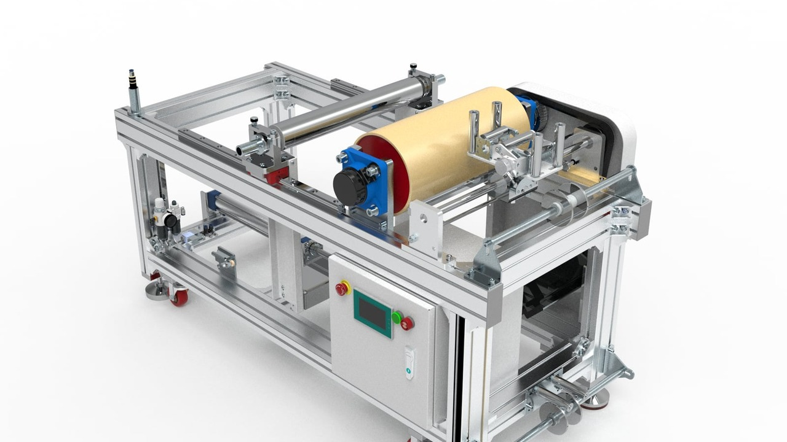

Published June 19, 2026 | By HDPTH Technical Editorial Team

Overseas buyers often spend most of their RFQ attention on speed, knife setup, winding method, and finished-roll quality. Those are the right priorities, but they are not the only ones. Once the web is slit, the machine still has to control the narrow waste strips removed from the edges. If that trim is not handled correctly, it can wrap, flutter, clog, fall into the operator area, or force extra stops for cleaning and collection.
That is why edge trim recovery deserves its own commercial review. In some projects, a simple arrangement is enough. In others, trim handling affects line cleanliness, operator exposure, and practical output more than buyers expect. The cost of overlooking it usually appears later as small stoppages, manual cleanup, or recurring instability that no one mentioned in the original quotation discussion.
What edge trim recovery actually covers
Edge trim recovery is the system used to remove and collect the side waste created during slitting. Depending on material and machine layout, that can involve trim winding, suction, pneumatic conveying, chopping, or a combination of those methods. The buyer does not need to choose terminology for its own sake. The important question is how the waste leaves the slitting zone and where it goes next.
Industry suppliers describe this in practical terms. DIENES presents edge-trim machines as dedicated systems for removing side trim across a wide range of applications, while AirTrim describes matrix and edge-trim removal as a pneumatic conveying problem that has to be matched to the material and waste path. Kampf also explicitly lists edge trim winding or suction as application options on some slitting systems. Across those sources, the pattern is consistent: trim handling is not generic. It must be matched to the web, the waste strip, and the line layout.
Why the decision matters to buyers
On paper, edge trim looks like a small part of the machine. On the production floor, it influences how cleanly the line runs and how often operators have to intervene. Light trim can wander. Static-prone trim can cling to machine parts. Continuous waste strips can build up around the slitting zone. At higher speed, even a narrow waste strip can create repeated disturbance if its removal path is unstable.
For that reason, the decision should be tied to real factory costs. If a plant loses time clearing waste strips, reorganizing bins, or stopping to remove trim wraps, then trim recovery is not a minor convenience. It is part of the line's uptime logic. If the plant can handle trim manually without production loss or safety concern, then a simpler scope may be justified.
- Continuous edge waste is creating nuisance stops, loose trim, or wrapping near the slitting zone.
- Line speed is high enough that unstable trim removal quickly becomes a production problem.
- Material is light, slippery, or difficult to guide once it becomes a narrow edge strip.
- Housekeeping and waste collection standards are stricter than a manual drop-to-floor approach can support.
- Buyers want to reduce operator handling around moving webs, knives, and rotating shafts.
What HDPTH can verify from the local site
The current local website provides a limited but useful factual basis. The main products page states that HDPTH's auxiliary equipment includes edge trim recovery systems. The automatic knife systems page also confirms an auxiliary option described as a trimming recovery system or edge material recovery. That same page ties the discussion to high-speed slitting and rewinding applications for nonwoven fabric, PE film, paper, hot air, spunlace, and spunbond.
The certificates and patents page strengthens that discussion further by explicitly listing technology coverage for edge trim recovery and by publishing titles such as Integrated Blowing and Suction Device for Slitter Edge Trim and Automatic Edge Trim Recovery System. Those local facts do not justify claiming that every HDPTH line ships with one standard trim-recovery method. They do justify treating trim handling as a legitimate configuration topic during supplier evaluation.
When trim winding is often the better answer
In some lines, the most practical method is to wind the edge waste as a controlled strip rather than try to pull it immediately into a suction system. Double E's trim-winder guidance is useful here because it frames trim winding as an independent waste-removal device that can run with adjustable torque and speed. Buyers should think about trim winding when the waste strip stays continuous and stable enough to be wound, and when the plant prefers a contained roll of waste over loose conveyed scrap.
Commercially, trim winding can make sense when the waste stream is predictable and the plant has a straightforward routine for removing and disposing of wound trim. It may be easier to maintain than a larger pneumatic network in some factories. The tradeoff is that the waste still exits as a roll or wound bundle, so the buyer has to consider operator handling, roll removal frequency, and where that waste will go after collection.
When suction or pneumatic conveying becomes more practical
Other lines are better suited to suction or pneumatic conveying. Kampf's battery-separator slitter page explicitly lists edge trim winding or suction possibilities, which highlights a useful buyer principle: the correct answer depends on the application, not on a universal preference. AirTrim's central-systems material makes the same point from the waste-handling side, showing that trim and matrix waste often need to be conveyed away from the machine rather than merely gathered at the source.
Buyers should lean toward suction or conveying when loose strips would otherwise create clutter near the line, when the trim needs to travel to a central bin or compactor, or when the waste path has to stay clear of operators, forklifts, or nearby stations. This is especially relevant when the line is part of a tighter converting layout and the factory wants cleaner automatic waste removal rather than manual collection at the machine side.
| Buyer Condition | Why It Pushes the Trim-Recovery Discussion |
|---|---|
| Very light or unstable trim strips | Loose edge waste is harder to control and more likely to interfere with the line. |
| High line speed | Small trim-handling problems scale quickly into repeat stoppages or waste accumulation. |
| Strict housekeeping requirements | Plants often need trim removed from the operator zone rather than dropped locally. |
| Centralized waste collection preference | Pneumatic or suction-based handling may fit better than manual roll removal. |
| Limited operator access near the slitting zone | Automatic waste removal reduces the need for repeated manual cleanup around moving parts. |
Why this belongs in the RFQ, not after the machine is fixed
Buyers sometimes wait until late-stage layout review to ask what happens to the trim. That is too late. The trim-recovery choice can affect machine-side space, utility planning, operator access, and sometimes the control logic of the slitting section itself. It can also influence how the plant handles waste bins, compactors, or duct routing.
If the project is already evaluating automatic knife systems for faster and more repeatable width changes, then trim handling should be discussed in the same window. Faster knife positioning does not solve what happens to the removed edge waste. Likewise, if the line scope is being compared against high-speed slitting machine performance, the buyer should not assume that quoted running speed is equally usable without stable trim removal.
Need to decide whether edge trim recovery belongs in your RFQ?
Send your material type, trim width, target speed, and current waste-handling problem. HDPTH can review whether trim winding, suction, or another recovery concept is the more practical fit.
Request RFQ ReviewWhat data buyers should send before asking for a recommendation
Trim recovery cannot be selected from one phrase such as "film" or "nonwoven." The supplier needs enough process detail to judge how the waste strip will behave once it is cut. That means buyers should send more than the main web width and target speed. They should also explain whether one or both edges are trimmed, how wide those strips are, and what failures happen today.
The local HDPTH pages already frame project discussion around material, width, speed, roll requirements, and machine layout. For trim recovery, that needs one more layer of detail focused on the waste stream itself.
- Material type and GSM or thickness
- Working web width and expected trim width on each side
- Target speed and whether trim behavior changes at higher speeds
- Whether one edge or both edges are removed continuously
- Current problems such as wrap, flutter, static cling, clutter, or manual cleanup
- Preferred waste destination: local collection, wound waste, central bin, or compactor
- Available compressed air, utility, and layout constraints around the line
How trim recovery affects safety and housekeeping
Buyers should not oversell trim recovery as a safety device, but they should not ignore its safety effect either. OSHA's general machine-guarding rule 1910.212 remains relevant because the slitting zone still contains moving webs, rotating shafts, and ingoing nip hazards. A poor trim path can increase operator intervention near those areas, especially if workers are repeatedly clearing loose waste or wrapped trim.
A more stable trim-recovery method can reduce that routine interference. It can also support a cleaner aisle and a better-organized waste flow. That does not replace guarding, training, or lockout practices. It simply means the buyer should assess trim handling as part of the operating environment, not only as a waste-management detail.
This is where supplier verification matters. A buyer comparing options should review the factory and workshop evidence together with the relevant patents and certificates to understand whether the supplier treats waste handling as a real engineering topic or as an undefined add-on.
A practical rule for deciding whether to specify it
If your line runs moderate speed, generates limited trim, and can collect waste cleanly without repeated operator action, you may not need a more advanced trim-recovery scope. If trim is already causing small stops, cleanup burden, or unsafe interference near the slitting section, then the issue should move into the formal RFQ immediately.
In other words, edge trim recovery is worth specifying when the buyer's problem is not just "we have waste," but "waste handling is affecting the way this line actually runs." That is the threshold where trim recovery becomes part of machine performance rather than a minor accessory.
Buyer FAQs
What is edge trim recovery on a slitter rewinder?
It is the method used to remove and collect the narrow side waste created during slitting. Depending on the project, that may involve winding, suction, conveying, chopping, or a combined system.
When is edge trim recovery worth specifying?
It is usually worth specifying when edge waste is continuous, unstable, or costly to handle manually, especially on faster lines or in plants that need cleaner and safer production flow.
Should buyers choose trim winding or trim suction?
That depends on the material, trim width, line layout, and waste destination. Buyers should ask which method stays more stable for their substrate and how the waste will be removed from the machine area.
What RFQ data matters for edge trim recovery?
Send material type, thickness or GSM, trim width, line speed, current waste problems, and how the plant wants to collect the waste. Without that data, the recommendation is only generic.
Can edge trim recovery improve line safety and housekeeping?
Yes. A good trim path can reduce loose waste around the slitting zone and lower avoidable operator intervention, but it still has to be combined with proper guarding and servicing procedures.
Sources
- DIENES USA: Edge-Trim Machines
- AirTrim: Matrix & Edge Trim Removal
- Double E Group: Pneumatic Trim Winder
- Kampf: BSFSlitter
- OSHA 1910.212: General requirements for all machines
Planning a slitting line with continuous edge waste?
Share your material, web width, trim width, speed target, and current waste-handling problem. HDPTH can review whether edge trim recovery should be included in the machine scope before quotation.
Send Your Inquiry